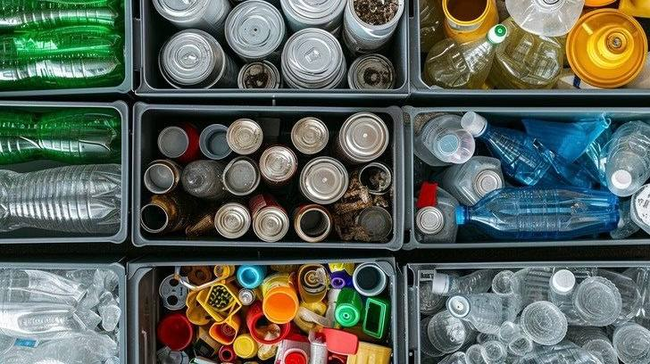
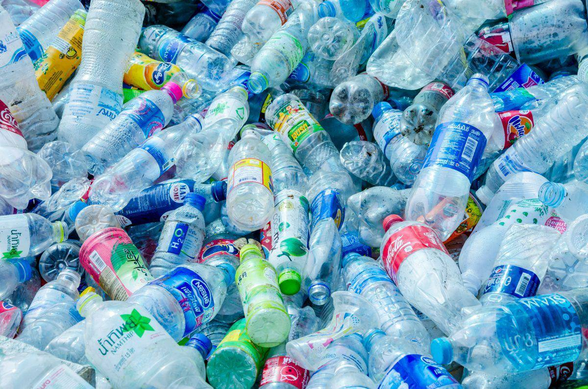
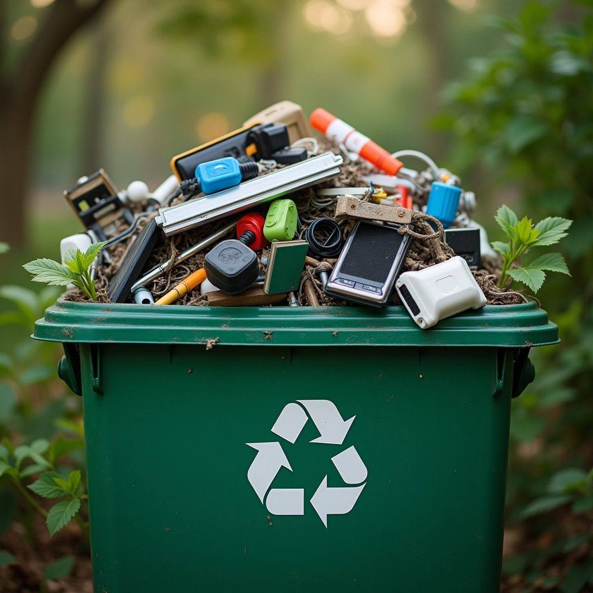
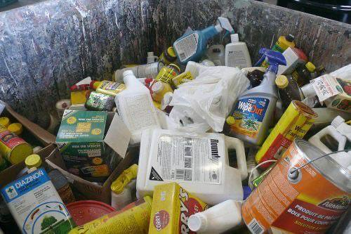
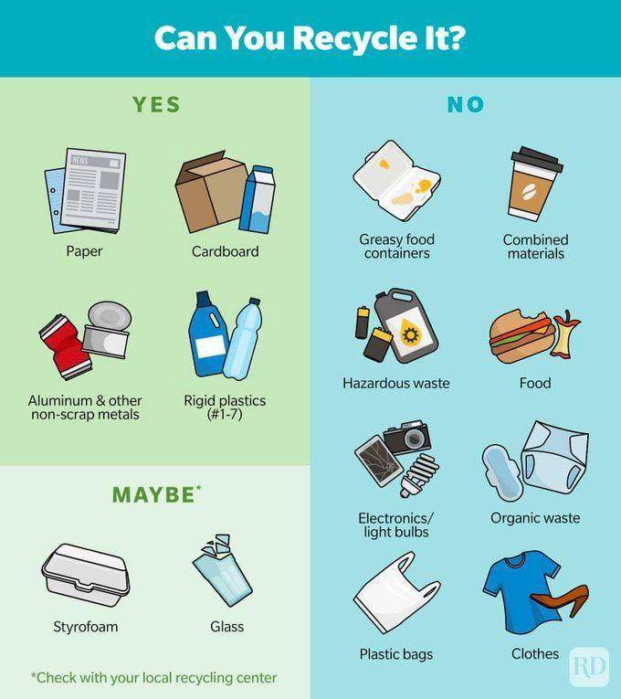
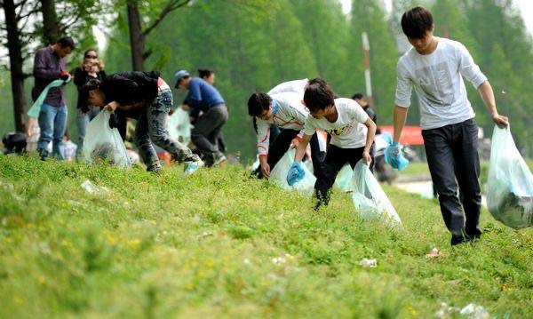
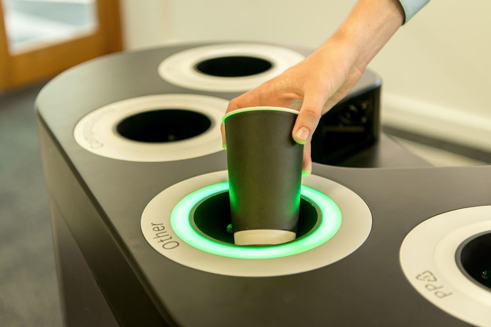

Sort your waste into different categories such as plastic, paper, glass, and food waste. This makes recycling easier and helps reduce the amount of trash sent to landfills.
Clean Recyclable Materials

Recyclable items such as bottles, cans, and containers should be cleaned before recycling. Removing food and liquid waste helps keep materials reusable and improves the recycling process.
Reduce Single-Use Plastics

People should reduce the use of disposable plastic items like plastic bags, straws, and cups. Using reusable products can help decrease pollution and protect the environment.
Reuse Items

Many items can be reused instead of thrown away. Containers, bags, books, and clothes can still be useful and help reduce the amount of waste produced.
Dispose Hazardous Waste Safely

Hazardous materials such as batteries, chemicals, and electronic devices should be disposed of carefully. These items should be taken to special collection or recycling centers.
Follow Local Recycling Rules

Different areas may have different recycling systems and accepted materials. People should follow local recycling guidelines and use the correct bins..
Keep the Environment Clean

Everyone should help keep the environment clean by avoiding littering, recycling properly, and participating in community clean-up activities.
Keep the Environment Clean

Smart bins use sensors and automated systems to detect different types of waste materials such as plastic, paper, glass, metal, and organic waste. The bin then automatically places each item into the correct compartment for recycling or disposal.